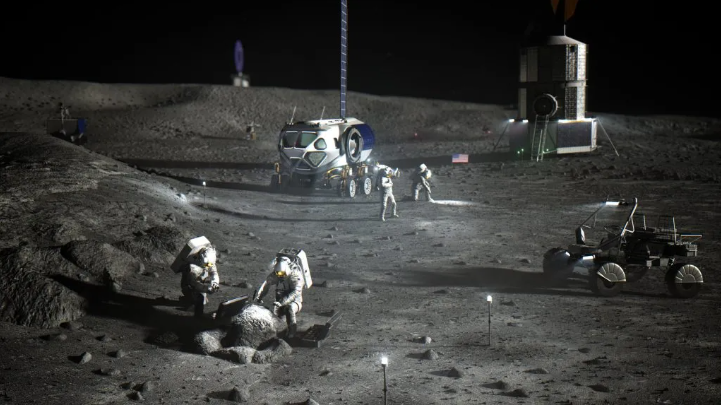

Team Solstice (our crew) task: Colonize the moon and create a base there for experiments and long-term human presence
- There is more than 600 billion kilograms of frozen ice at the poles of the Moon, which could be used as a efficient water supply.
- There was a 1967 Outer Space treaty which says that no country can claim any celestial object, including the moon, meaning countries that don't usually negotiate will have to work together.
- Temperature on the moon can swing 660 degrees fahrenheit between shadowy areas and sunsoaked canyons, making navigation very perilous.
- One advantage is that the the moon has 1/6th of the earth's gravity, significantly lowering costs of launching rockets and transporting cargo
Easy aspects and potential difficulties of moon colonization:
